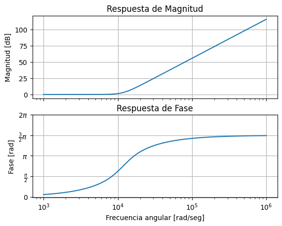
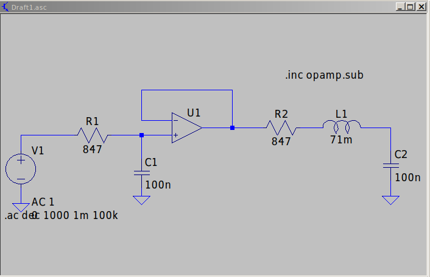
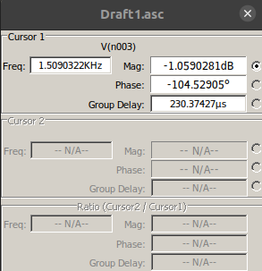
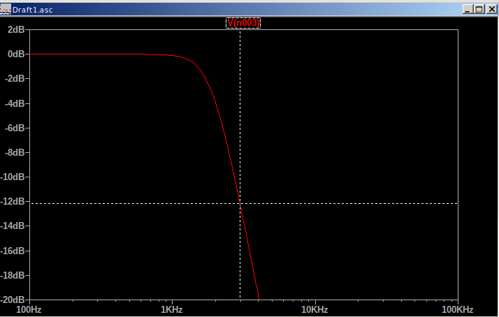
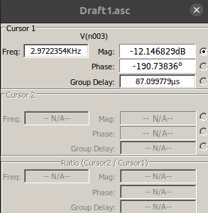
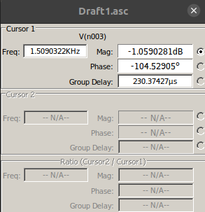
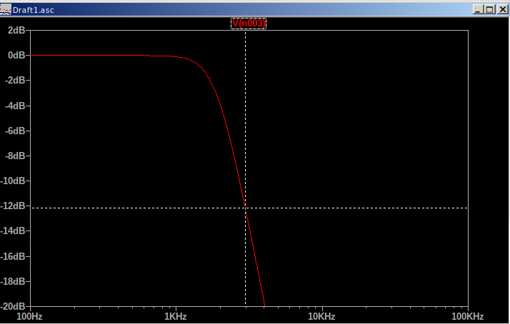
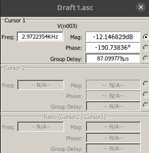

TP SEMANAL 3 TC II
Enunciado
A partir de la siguiente plantilla, sabiendo que:

Obtener la transferencia para máxima planicidad en la banda de paso utilizando los conceptos de partes de función. Recordar que: |T(jω)|2=T(jω)⋅T(−jω)=T(s)⋅T(−s)|s=jω
Obtener el diagrama de polos y ceros, y un bosquejo de la respuesta en frecuencia.
Implementar el circuito normalizado con estructuras pasivas separadas mediante buffers.
Obtenga el circuito que cumpla con la plantilla requerida si dispone de capacitores de 100nf.
Proponga una red que se comporte igual a la hallada en 4) pero con resistores, capacitores y opamps.
Bonus:
+10 💎 Proponer un planteo alternativo a 1) usando la ωButter (ver Schaumann 6.4)
+10 ⚽️ Simulación numérica y circuital.
+10 🍺 Presentación en jupyter notebook.
Manuscritos
[10]:
from IPython.display import IFrame
IFrame("./DocumentoEscaneado.pdf", width="100%", height="600")
[10]:
[11]:
import numpy as np
from scipy import signal as sig
from matplotlib import pyplot as plt
from pytc2.sistemas_lineales import bodePlot, pzmap
plt.figure(1)
plt.close(1)
eps = .5088
fp = 1500
wp = fp * 2 * np.pi
w0 = eps**(-1/3) * wp
num1 = np.array([w0**2])
den1 = np.array([1, w0, w0**2])
num2 = np.array([w0])
den2 = np.array([1, w0])
num = np.convolve(num1, num2)
den = np.convolve(den1, den2)
alpha = sig.TransferFunction(den, num)
H1 = sig.TransferFunction(num, den)
fig1, axs = bodePlot(alpha) # Obtener la figura y las subtramas
pzmap(H1)
plt.show()


Simulacion del circuito normalizado


Simulacion circuito de plantilla con C = 100nF
    
  